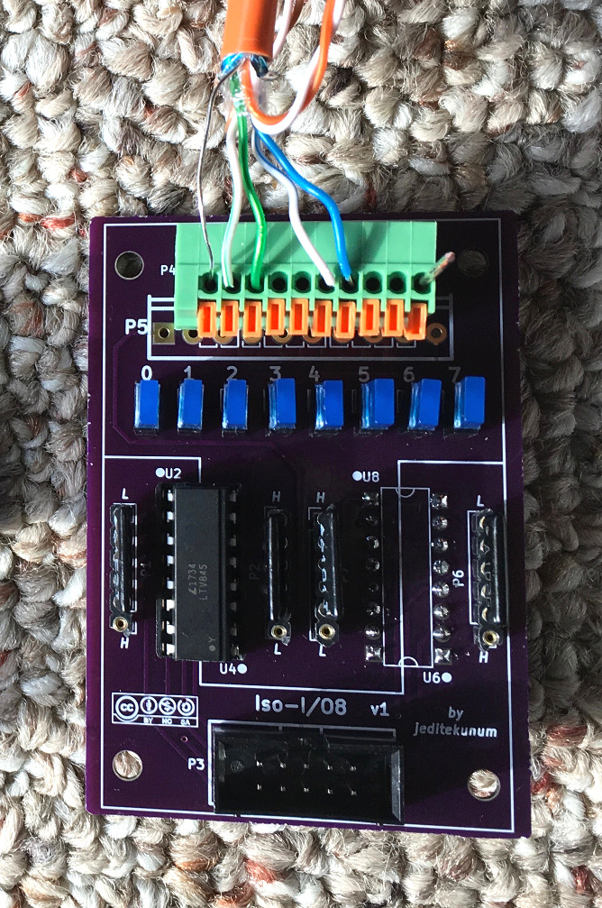

Isolated 8 I/O Adapter for Elexol et al.
January 2018
Requirements
After a great deal of frustration locating a resonably priced solution for a large project, I resorted to my own design documented here. I had a need for a large number (64+) of I/O pins for a whole home automation project. I wanted to use simple/common wall switches with LED indicators, for example the Wattstopper LVSW series. My reasons include avoiding vendor lock-in with proprietary switches (the path Loxone is on). Since the switches would be placed all around my new home, I wanted an opto isolated interface.
The trouble with most home automation systems is that they are proprietary and despite their apparent flexibility when it comes to I/O, they aren't as flexible as one would assume and they certainly aren't inexpensive. For the moment I'm planning on using a Loxone Mini Server. I/O pins are expensive at the scale I'm doing. Some in the community have used the Elexol Io72 ethernet bridge that is less expensive (also has the burden of horrible Java-based admin interface). Both require additional circuits to connect to anything meaningful. By that I mean that the Elexol pins are logic level (5V) requiring yet another adapter. The Loxone has no built-in pull ups.
On the switch side of things one finds that there are a few ways in which switch vendors have implemented products. The Wattstopper LVSW happens to use a ground common line (for both switches and LEDs on the older versions with the ability to separate on the newer ones) and the LEDs need +24VDC drive; the switches pull their lines to common. Other products may have common positive, etc.
While most people won't bother, I wanted the ability to have some smarts when it comes to the LEDs. For example, dimming and, to a lesser degree, special effects like fade. Nothing about Loxone or Elexol makes that easy. My article SX1509 Adapter Adapter discuss my SX1509 implementation that is an I/O expander with these capabilities - and it drives this adapter.
In short I was looking for something like the swiss army knife of I/O adapters. Something that would meet my immediate need and provide a very flexible base for future projects.
Mind Twisting Hardware Design
Here is my solution.
Most definitely a trade off in simplicity for flexibility. If you're like me, it will make your head hurt trying to understand it.
Each group of 4 pins can be hardware-configured for either input or output. For even greater flexibilty, four different modes are available. This is possible because of the pin layout of typical 4 channel optoisolators such as the LTV-845. For each physical DIP location the optoisolator can be installed in either orientation on either the top or bottom of the board! Quad (5-pin) bus resistor networks are installed in two different orientations depending on what is desired. The table at the bottom of the schematic helps to describe each configuration and what it might be used for.
It would take a lot of text here to fully explain this design but I'm certain that I would do more damage to your understanding than just leaving the schematic to be studied (which you would need to do anyway, trust me). The key thing to remember is that each set of 4 pins, top and bottom of schematic, have 4 possible orientations for the optoisolator and 2 possible orientations for each of the two resistor networks.
The LEDs on the right side are not drawn as their direction varies depending on which configuration is chosen. (Of course they can be ommitted - just short the pins.)
The PCB is available at OSHPark. (as of 2018 ~$28 for 3 boards)
The resistor network values chosen depend on the configuration, voltages, and switches being used. A Wattstopper and Elexol combination would use configuration U4 for input and U5 for output. For my tests with Wattstopper LVSW I used 10K ohm for the button inputs (for pull up) and 100 ohms for the LED drive (the switches have large resistors in them). On the controller side, with 5V (Elexol) I used 1.5K ohm. Other optoisolators can be used as the pinout is common.
The switch side connectors can be a spring terminal block (2.54mm pitch, KF141V-10P or equivalent) or a 3.5mm pitch screw terminal block.
As the title of this article eludes to, the controller side of this adapter is pin-compatible with the Elexol products.
Wattstopper Wiring Tip
The 4-switch LVSW requires 4 inputs for buttons, 4 outputs for LEDs, and a common. You can use shielded (STP) catX cable as the shield has a 9th wire.
Example
This image is an example populated for input on the first 4 and output on the last 4.
